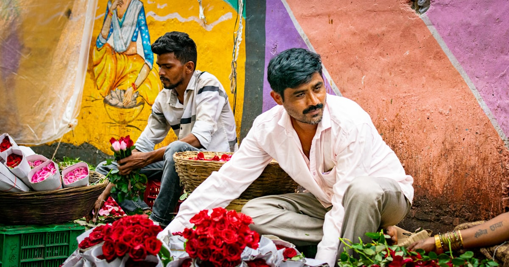

Dadar Flower Market at Dawn
Mumbai's colours, before the city wakes up

The flowers get to Dadar before the sun does. Trucks and train-loads arrive through the small hours from growers across Maharashtra, and by five in the morning the lanes beside the station are ankle-deep in colour — marigolds in tumbling heaps, roses stacked in tight paper bundles, tuberoses, lotus buds, jasmine being threaded into garlands by hands that never seem to stop.
This is a working wholesale market, not a show. The buyers are temple suppliers, wedding decorators and stallholders from all over the city, and the bargaining is quick and loud. Pooja walks you through it at the market's own pace — who grows what, why the marigold matters to every Indian doorway, what a day's trade looks like — while porters swing past with baskets on their heads.
It's an early alarm, and it earns you the best light of the day. By the time the ordinary city is having breakfast, you've seen it at its most alive. Chai afterwards, obviously.
The day, stop by stop
- Early meetingMeet near Dadar station before sunrise — or be collected from your hotel on the with-pickup option.
- The wholesale lanesSacks of marigolds, bundles of roses, and fast, loud trading as the city's buyers arrive.
- The garland makersWatch jasmine and marigold strung into garlands at astonishing speed.
- The light coming upThe market at sunrise — the hour photographers get up early for.
- Chai to finishA hot glass at a stall as the market begins to empty out.
Prices
All prices are per person — pick an option and confirm it on WhatsApp.
- Group tour₹1,500
- Private tour₹2,500
- Group tour, with pick-up & drop₹3,300
- Private tour, with pick-up & drop₹4,300
Included
- Pooja as your guide
- Bottled water
- Pick-up and drop-off, on the with-pickup options
Not included
- Any flowers you can't resist buying
- Breakfast, if you add one after
What to bring
- Shoes you don't mind getting wet — market floors are hosed and strewn with stems
- A light layer; it's the coolest hour of the day
- Your camera — but ask before photographing vendors up close
Good to know
- Group departures or private — all four prices above, per person
- This means a genuinely early start — roughly with the sunrise; exact time agreed on WhatsApp
- It's a working market: stay nimble and keep clear of the porters
- Pairs well with a same-morning Dhobi Ghat visit — ask Pooja
Fancy this one?
Message Pooja with your dates — she'll answer questions before you commit to anything.
Enquire on WhatsApp